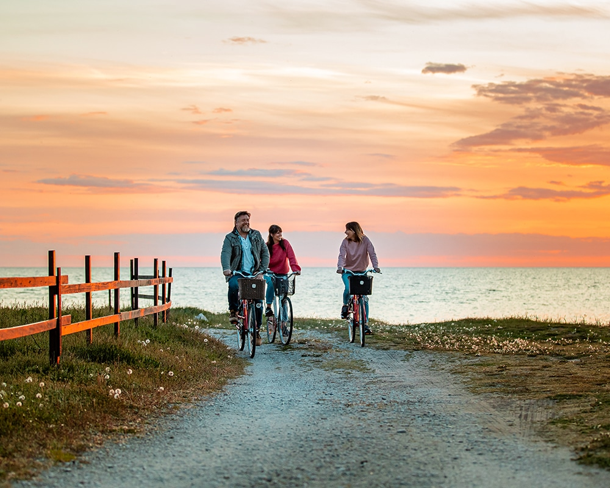
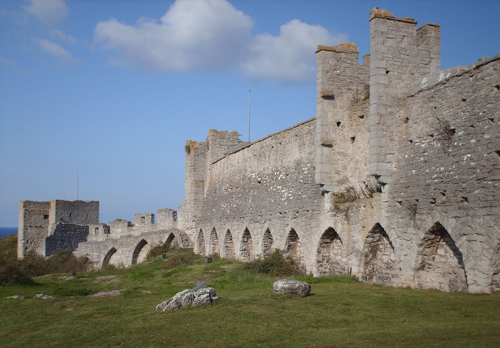
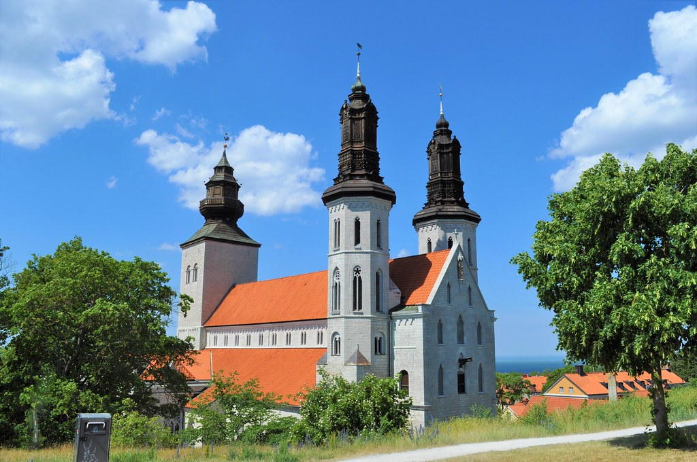
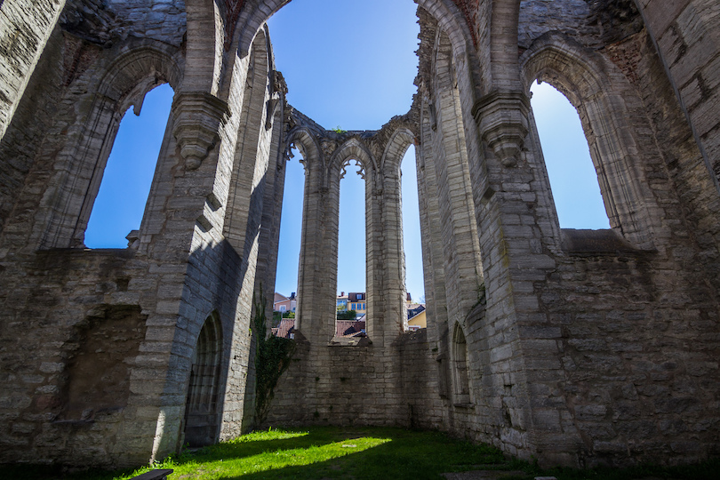

Gotland erbjuder unika naturupplevelser, historiska miljöer och charmiga kuststäder. Med soliga stränder, raukar, mysiga caféer och den medeltida atmosfären i Visby får du en resa som kombinerar avkoppling och äventyr. Ön är lätt att utforska och perfekt för både familjer och vänner.

Visby ringmur är ett unikt historiskt monument som omsluter den medeltida staden Visby. Den berättar om Gotlands rika historia och erbjuder fantastisk utsikt över havet och staden. Att promenera längs muren ger en känsla av tidens gång och en oförglömlig upplevelse av svensk kulturarv.


Sankta Maria Domkyrka i Visby är en av Gotlands mest imponerande sevärdheter. Här möts historia, arkitektur och en stämningsfull miljö. Besökaren kan uppleva den vackra kyrkobyggnaden, fascineras av dess detaljer och få en känsla för Visbys rika medeltida historia. Ett självklart stopp för kultur- och historieintresserade besökare.
Sankta Karins kyrkoruin i Visby är en imponerande plats där historia och arkitektur möts. De mäktiga stenmurarna ger en tydlig bild av hur Visby såg ut under medeltiden. Besökare kan upptäcka ruinen, njuta av den historiska atmosfären och lära sig mer om Gotlands spännande och rika historia.

Sankta Maria Domkyrka i Visby är en av Gotlands mest imponerande sevärdheter. Här möts historia, arkitektur och en stämningsfull miljö. Besökaren kan uppleva den vackra kyrkobyggnaden, fascineras av dess detaljer och få en känsla för Visbys rika medeltida historia. Ett självklart stopp för kultur- och historieintresserade besökare.